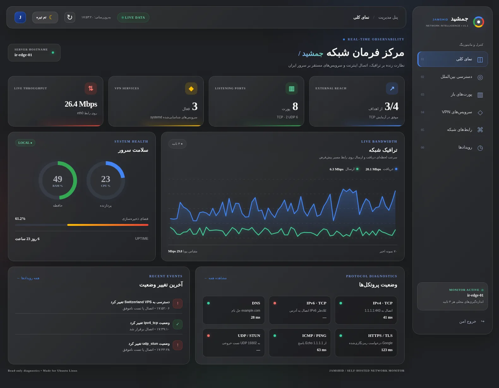

پایش لحظهای سرور
مصرف CPU، حافظه، فضای دیسک، رابطها و نرخ ترافیک ورودی و خروجی با نمودارهای پویا.
REAL-TIME METRICSجمشید، رادار شبکه برای سرورهای Ubuntu؛ از پورتهای TCP و UDP تا آزمون دسترسی به سرورهای خارج، همه در یک داشبورد زیبا و امن.

اطلاعات کاربردی برای تصمیمگیری دقیقتر درباره سلامت ارتباطات؛ بدون ادعای اندازهگیری چیزهایی که از یک سرور بهتنهایی قابل تشخیص نیستند.
مصرف CPU، حافظه، فضای دیسک، رابطها و نرخ ترافیک ورودی و خروجی با نمودارهای پویا.
REAL-TIME METRICSفهرست سوکتهای در حال شنود، آدرس Bind و خانواده IPv4/IPv6، مستقیماً از ابزارهای لینوکس.
LOCAL SOCKETSپایش TCP و Ping برای مقصدهای قابل تنظیم؛ مناسب مقایسه دسترسی از داخل ایران به VPSهای خارج.
OUTBOUND CONNECTIVITYشناسایی سرویسهای شناختهشده و رابطهای تونل؛ همراه با نمایش تفاوت وضعیت سرویس و عملکرد واقعی تونل.
SERVICE DISCOVERYتست DNS، HTTPS، IPv4/IPv6 و یک جریان مشخص UDP/STUN با نمایش نتیجه مستقل هر آزمون.
NETWORK DIAGNOSTICSورود با رمز عبور، مسیر وب اختصاصی، TLS با Let's Encrypt و مدیریت اعتبارنامه از ترمینال.
AUTH & ENCRYPTIONطراحی راستبهچپ با فونت وزیرمتن، رنگهای آبی، قرمز، زرد و سبز و دو تم اختصاصی.
اینها تصاویر رابط کاربری هستند؛ برای مشاهده وضعیت واقعی شبکه باید جمشید را روی سرور خودت نصب کنی.
همه تستهای اتصال از داخل Ubuntu شروع میشوند؛ بنابراین نتیجه، نمایی از ارتباط خروجی همان سرور است.
جمعآوری وضعیت سیستم، شبکه و پورتهای محلی
اجرای آزمونهای TCP، ICMP، DNS و HTTPS
سرویسها یا VPSهای خارجی که خودت تعیین میکنی
دقت مانیتورینگ: «پورت در حال شنود» معادل «باز بودن از اینترنت» نیست؛ همچنین تست موفق TCP لزوماً به معنای سالم بودن کانفیگ VPN نیست. برای ارزیابی دسترسی ورودی از خارج، به یک Agent خارجی نیاز داریم.
مخزن را روی سرور دریافت کن و نصبکننده تعاملی را اجرا کن. برای استفاده بیرونی، دامنه و HTTPS لازم است.
# 1. Clone the repository
sudo apt update && sudo apt install -y git
git clone https://github.com/ArioBarzanMoradi/Jamshid-Radar.git
cd Jamshid-Radar
# 2. Run the installer
sudo bash scripts/install.sh
# 3. Enable HTTPS after DNS is ready
sudo bash scripts/enable-ssl.sh jamshid.example.comکد پروژه برای انتشار در مخزن GitHub آماده است؛ درباره مجوز توزیع، صاحب پروژه تصمیم میگیرد.